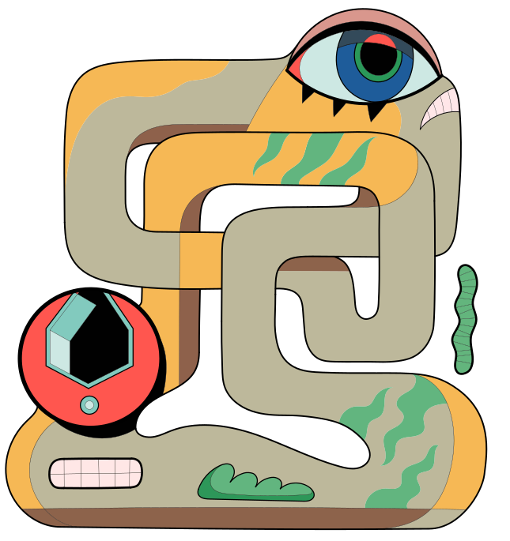
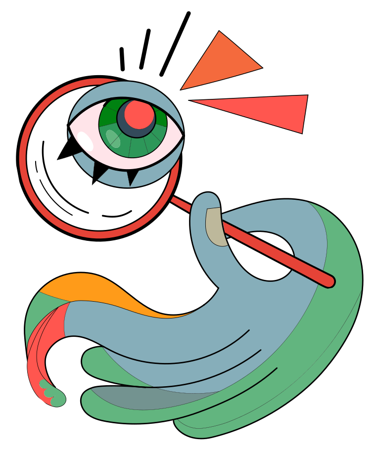
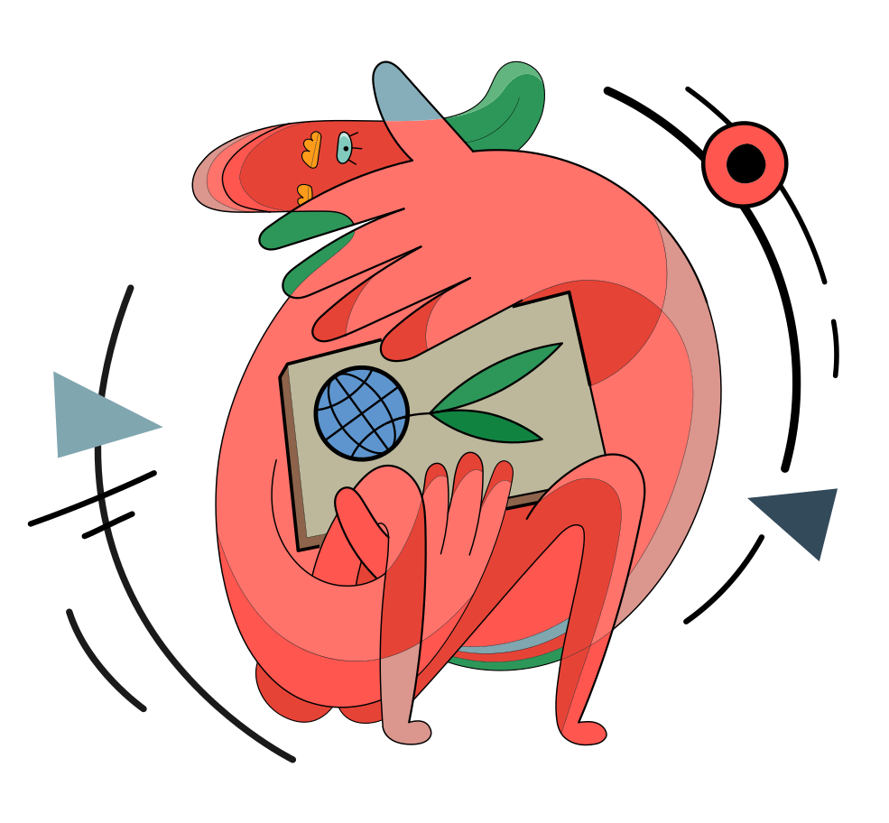

Веб-технологии
Это технологии формирования и поддержки разных информационных ресурсов в сети интернет.

Теперь время интересных фактов! В Гималаях (юго-западный Китай) живет малая панда (красная панда). В английском языке её называют «Firefox». Это слово вдохновило создателей популярного браузера… вот только на логотип они почему-то поместили красную лису, а не панду.

На самом первом логотипе Apple был изображен сидящий под яблоней сэр Исаак Ньютон. Над ним нависает вот-вот готовое упасть яблоко.

Лучшие существа
- Первое
- Второе
- Третье
Ну что ж
Ещё больше интересных фактов